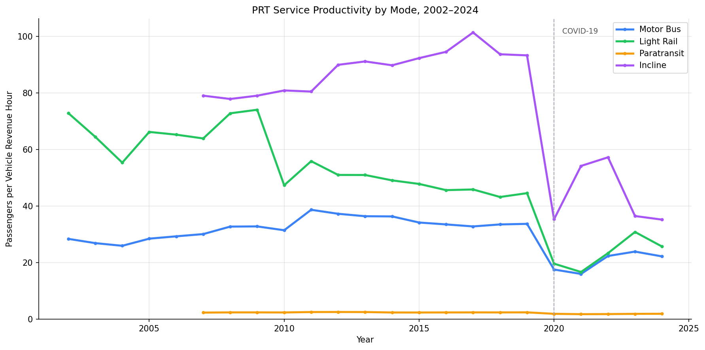
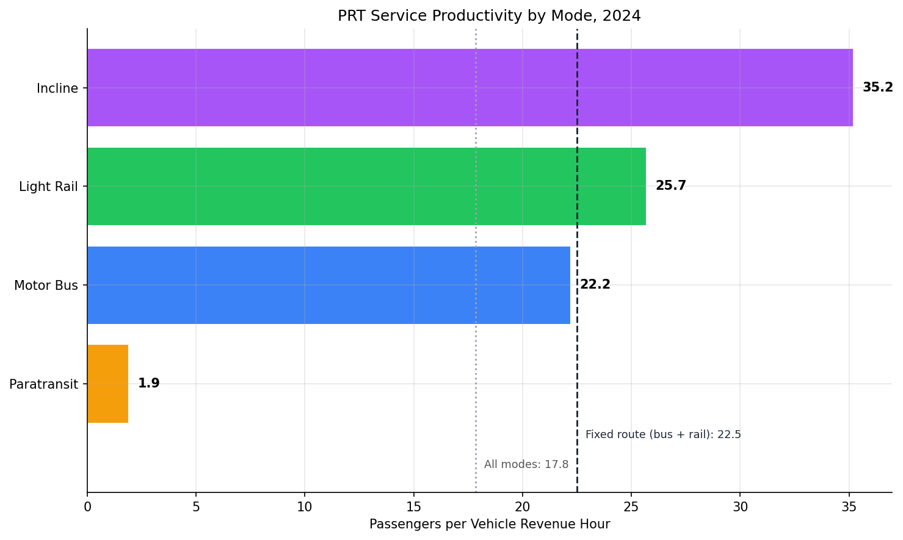
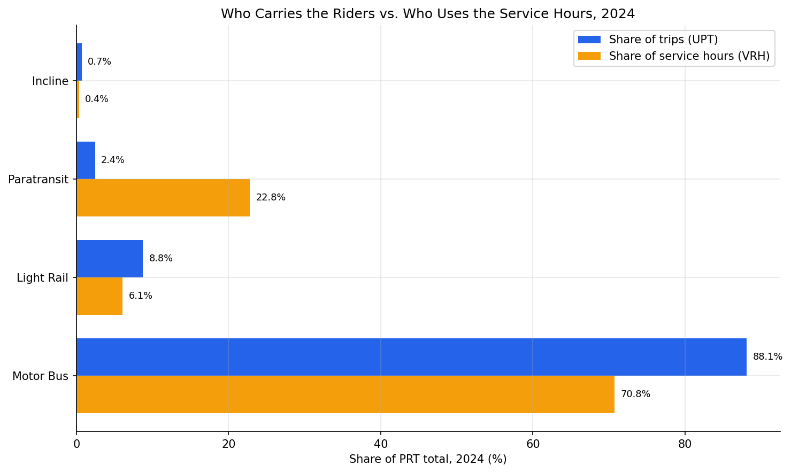
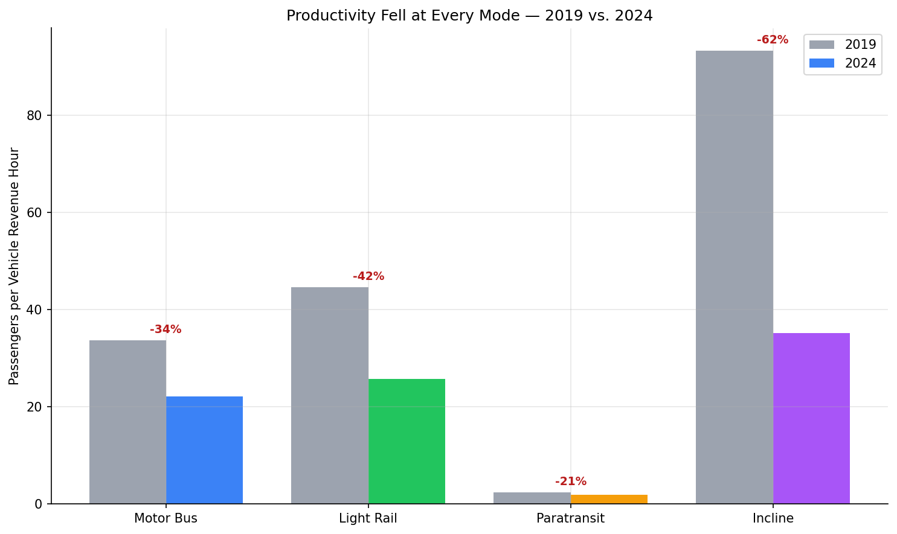

Analysis
50 - Bus vs. Rail: Productivity by Mode
Equity and Strategic Planning
Coverage: 2002-01 to 2025-12 (from ntd_ridership).
Built 2026-06-05 17:09 UTC · Commit 5dead49
Page Navigation
Analysis Navigation
Data Provenance
flowchart LR
50_mode_productivity(["50 - Bus vs. Rail: Productivity by Mode"])
t_ntd_ridership[("ntd_ridership")] --> 50_mode_productivity
05_ntd_ridership[["NTD Ridership ETL"]] --> t_ntd_ridership
u1_05_ntd_ridership[/"data/ntd-monthly-ridership/December 2025 Complete Monthly Ridership (with adjustments and estimates)_260202.xlsx"/] --> 05_ntd_ridership
d1_50_mode_productivity(("polars (lib)")) --> 50_mode_productivity
classDef page fill:#dbeafe,stroke:#1d4ed8,color:#1e3a8a,stroke-width:2px;
classDef table fill:#ecfeff,stroke:#0e7490,color:#164e63;
classDef dep fill:#fff7ed,stroke:#c2410c,color:#7c2d12,stroke-dasharray: 4 2;
classDef file fill:#eef2ff,stroke:#6366f1,color:#3730a3;
classDef api fill:#f0fdf4,stroke:#16a34a,color:#14532d;
classDef pipeline fill:#f5f3ff,stroke:#7c3aed,color:#4c1d95;
class 50_mode_productivity page;
class t_ntd_ridership table;
class d1_50_mode_productivity dep;
class u1_05_ntd_ridership file;
class 05_ntd_ridership pipeline;
Findings
Findings: Bus vs. Rail — Productivity by Mode
Key findings
Rail runs fuller than bus. In 2024 PRT's light rail "T" carried 25.7 passengers per vehicle revenue hour, against 22.2 for the motor bus network — rail was about 16% more productive per hour of service operated. The common assumption that buses are the workhorse and rail the showpiece has it backwards on this measure: each hour of light rail service moved more riders.
Paratransit drags the agency average far below the bus-and-rail network. PRT's demand-response ACCESS service carried just 1.9 passengers per revenue hour in 2024 — roughly one-twelfth the fixed-route rate. It accounted for only 2.4% of PRT's trips but consumed 22.8% of all revenue hours. This is not waste: door-to-door service for riders with disabilities is inherently low-productivity and is federally required under the Americans with Disabilities Act. But it means the agency-wide productivity figure is a blend that no rider of the bus or "T" actually experiences.
The fixed-route network is meaningfully more productive than the agency number. Analysis 48 reported PRT's agency-wide productivity at about 18 passengers per revenue hour. Strip out paratransit and the incline, and PRT's conventional bus-plus-rail network ran at 22.5 in 2024 — 26% higher. The service most riders use is healthier than the all-mode blend suggests.
The incline is PRT's most productive service — but tiny and volatile. The Monongahela Incline carried 35.2 passengers per revenue hour in 2024, the highest of any mode: a short, frequently-boarded ride up Mount Washington. It is also the smallest, at 0.7% of trips, and its productivity swings sharply year to year because its revenue hours are small and sensitive to maintenance closures (it dropped to 35 in 2020, rebounded to 57 in 2022, then fell again).
The post-2019 decline hit every mode. From 2019 to 2024, productivity fell 34% for motor bus (33.7 → 22.2), 42% for light rail (44.6 → 25.7), 21% for paratransit (2.4 → 1.9), and 62% for the incline (93.3 → 35.2). Light rail's percentage drop was the steeper of the two fixed-route modes — its ridership fell faster than the bus while its service hours were cut less.
Before COVID, bus and rail moved in opposite directions. Motor bus productivity rose from 28.4 in 2002 to a peak near 38 around 2011, then held in the low 30s: PRT cut bus service hours (2.23M → 1.47M VRH) faster than bus ridership fell — a genuine right-sizing. Light rail did the reverse, falling from about 73 in 2002 to 45 by 2019, as the 2012 North Shore Connector extension added service hours without adding proportional ridership. The agency-wide story of "service held flat while riders disappeared" is really two opposite mode trends averaged together.
Limitations
- Agency and mode level only. NTD reports each mode for the whole agency, so this cannot distinguish a busy bus route from a coverage route, or one rail line from another. The per-mode figures are network averages.
- The incline series is small-sample and volatile. The incline operates a few thousand revenue hours a year, so its productivity is sensitive to short closures and reporting quirks. Its 2019→2024 change should be read as directional, not precise.
- Paratransit VRH begins in 2007. The NTD Monthly Module does not report revenue hours for demand-response or incline service before 2007, so those two productivity series — and the all-mode roll-up — start that year. Motor bus and light rail have a complete record from 2002.
- UPT counts boardings, not riders. A passenger who transfers is counted on each vehicle boarded, so productivity here is boardings per service hour, not unique people moved. This inflates bus productivity slightly relative to rail, since bus trips involve more transfers.
- VRH excludes deadhead. Revenue hours count only time in passenger service, not pull-out, layover, or repositioning, so this understates total operating effort behind each productive hour — equally across modes.
- Productivity is not the only goal. Paratransit's low figure reflects a legal service mandate, not inefficiency; a coverage-oriented service is expected to score low. The metric describes how full a service runs, not whether it is worth running.
Validation
- Data source verified.
uptandvrhcolumns ofntd_ridership, sourced from the NTD Monthly Module workbook (UPT and VRH sheets). Thevrhcolumn was added to the table for this analysis; the ETL (src/prt_otp_analysis/ntd_ridership.py) unpivots the VRH sheet on the same agency/mode/TOS/month grain as UPT. No column mapping was written from memory. - Temporal scope matches. All four modes are summed over the same calendar years (2002–2024). The all-mode and paratransit/incline series are restricted to 2007–2024, the span where every mode has reported VRH; this restriction is stated in METHODS.md.
- Null/missing handling. Productivity is computed only where reported VRH is greater than zero. Pre-2007 demand-response and incline months report VRH = 0; these are left null, never treated as real zero-hour service that would yield an infinite ratio.
- Aggregates sanity-checked. The all-mode 2024 figure (17.8) reconciles with Analysis 48's 18.3: Analysis 48 uses the NTD annual TS2.2 workbook (2024 UPT 37.9M), this analysis uses the NTD Monthly Module (2024 UPT 36.9M). The ~3% gap between the two NTD products is normal cross-source variance; both place PRT near 18. Motor bus 2024 UPT (32.5M) is consistent with PRT carrying ~88% of its trips on the bus.
- Direction of effects checked. Productivity fell at every mode after 2019, consistent with the documented national post-COVID ridership decline. No directional reversal.
- Surprising result investigated. Light rail out-productive of motor bus is plausible, not a data error: rail serves dense, high-demand corridors at high frequency, while the bus network includes many low-density coverage routes. The incline ranking highest is also expected — a short ride with rapid boardings packs many trips into few service hours. Both were checked against the underlying UPT and VRH totals.
- Ecological framing. All results are described as mode-level network averages for PRT, never as statements about individual routes or riders.
Output

Line chart of passengers per revenue hour for each PRT mode, 2002-2024.

Bar ranking of 2024 productivity by mode, with the fixed-route and all-mode roll-ups marked.

Each mode's 2024 share of total trips compared with its share of total service hours.

Productivity by mode in 2019 versus 2024, with the percent change labeled.
No interactive outputs declared.
Passengers, revenue hours, and productivity for each PRT mode and calendar year, 2002-2024.
Preview CSV
Per-mode productivity at 2007/2019/2024, the 2019-2024 change, and each mode's 2024 share of trips and service hours, including bus+rail and all-mode roll-ups.
Preview CSV
Methods
Methods: Bus vs. Rail — Productivity by Mode
Question
Analysis 48 found that PRT's agency-wide service productivity — passengers carried per hour of service operated (UPT / VRH) — has roughly halved, to about 18 passengers per revenue hour in 2024. But that single number blends four very different services: the motor bus network, the light rail "T", the door-to-door ACCESS paratransit service, and the Monongahela Incline. This analysis splits the agency figure apart. How productive is each mode? Is the low agency average dragged down by one service? And has the post-2019 decline hit bus and rail equally?
Approach
- Define productivity exactly as Analysis 48 does — unlinked passenger trips per
vehicle revenue hour,
productivity = UPT / VRH— but compute it per mode instead of agency-wide. - Pull PRT's monthly UPT and VRH by mode from
ntd_ridershipand aggregate to calendar years. The four NTD mode codes map to:MB= Motor Bus,LR= Light Rail,DR= Paratransit (demand-response ACCESS service),IP= Incline. - Compute productivity only for mode-years with reported VRH > 0. The NTD
Monthly Module does not report VRH for
DRorIPbefore 2007, so their productivity series begin in 2007;MBandLRhave a complete VRH record from 2002. Mode-years without VRH are left null, never treated as zero. - Build two roll-ups: fixed-route (
MB+LR, the conventional bus + rail network) and all-mode (every mode, which reproduces the agency-wide figure of Analysis 48). The all-mode series is reported only for 2007–2024, the span where every mode has VRH. - Compare modes three ways: a 2024 productivity snapshot, the 2019→2024 change (the COVID window used by Analysis 48), and each mode's 2024 share of trips versus its share of revenue hours — which exposes whether a mode consumes service out of proportion to the riders it carries.
- Reconcile the all-mode 2024 figure against Analysis 48's 18.3, which is built from a different NTD source (the annual TS2.2 workbook).
Data
ntd_ridership: columnsntd_id,mode,tos,month,upt,vrh. Filtered tontd_id = 30022(PRT). Monthly records summed to calendar years 2002–2024. Thevrhandvrmcolumns were added to this table specifically to support a per-mode productivity breakdown — the agency-levelntd_annual_servicetable used by Analysis 48 cannot be split by mode.- The
IPmode has two type-of-service records (IP/DOandIP/PT); the purchased-transportation record ends in 2012. Summing UPT and VRH across both records for each month combines them into one Incline series.
Output
output/mode_productivity_by_year.csv— UPT, VRH, and productivity for every mode and calendar year 2002–2024.output/mode_summary.csv— per mode (plus fixed-route and all-mode roll-ups): productivity at 2002/2007, 2019, and 2024, the 2019→2024 percent change, and the 2024 shares of trips and revenue hours.output/mode_productivity_trends.png— productivity by mode, 2002–2024.output/mode_productivity_2024.png— bar ranking of 2024 productivity by mode, with the fixed-route and all-mode roll-ups marked.output/service_vs_ridership_2024.png— each mode's share of 2024 trips versus its share of 2024 revenue hours.output/productivity_decline_2019_2024.png— productivity by mode in 2019 versus 2024.
Source Code
|
Sources
| Name | Type | Why It Matters | Owner | Freshness | Caveat |
|---|---|---|---|---|---|
| ntd_ridership | table | Primary analytical table used in this page's computations. | Produced by NTD Ridership ETL. | Updated when the producing pipeline step is rerun. | Coverage depends on upstream source availability and ETL assumptions. |
Upstream sources (1)
|
|||||
| polars | dependency | Runtime dependency required for this page's pipeline or analysis code. | Open-source Python ecosystem maintainers. | Version pinned by project environment until dependency updates are applied. | Library updates may change behavior or defaults. |